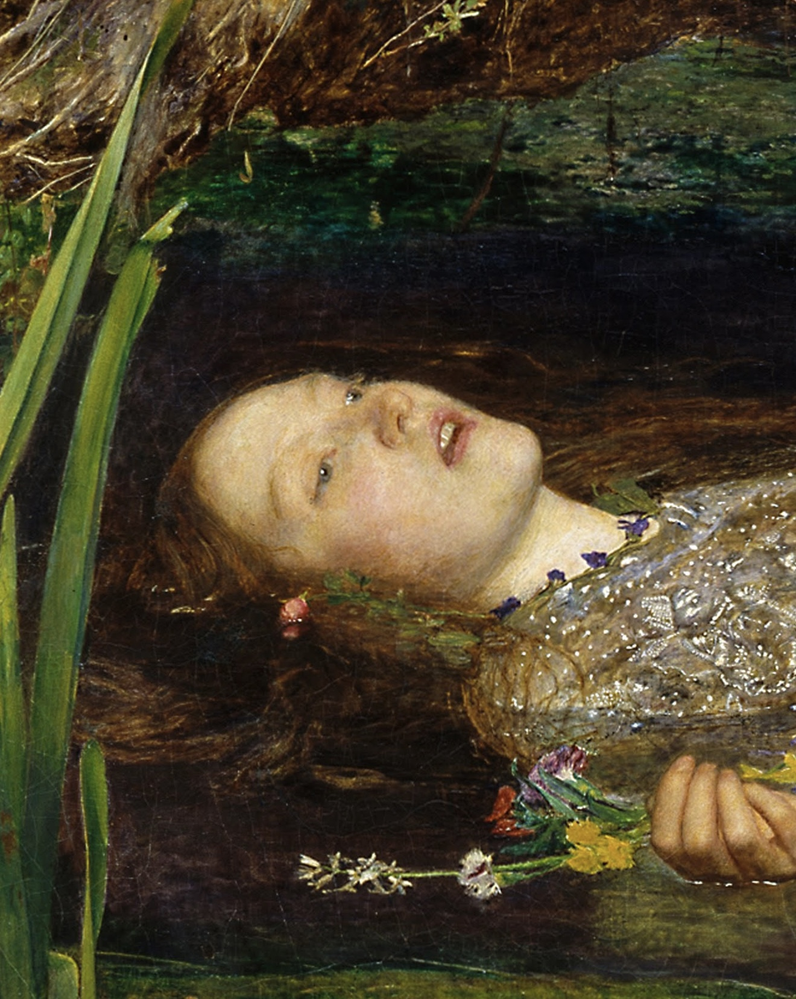
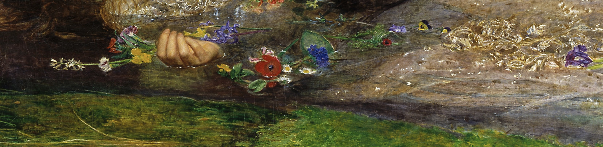
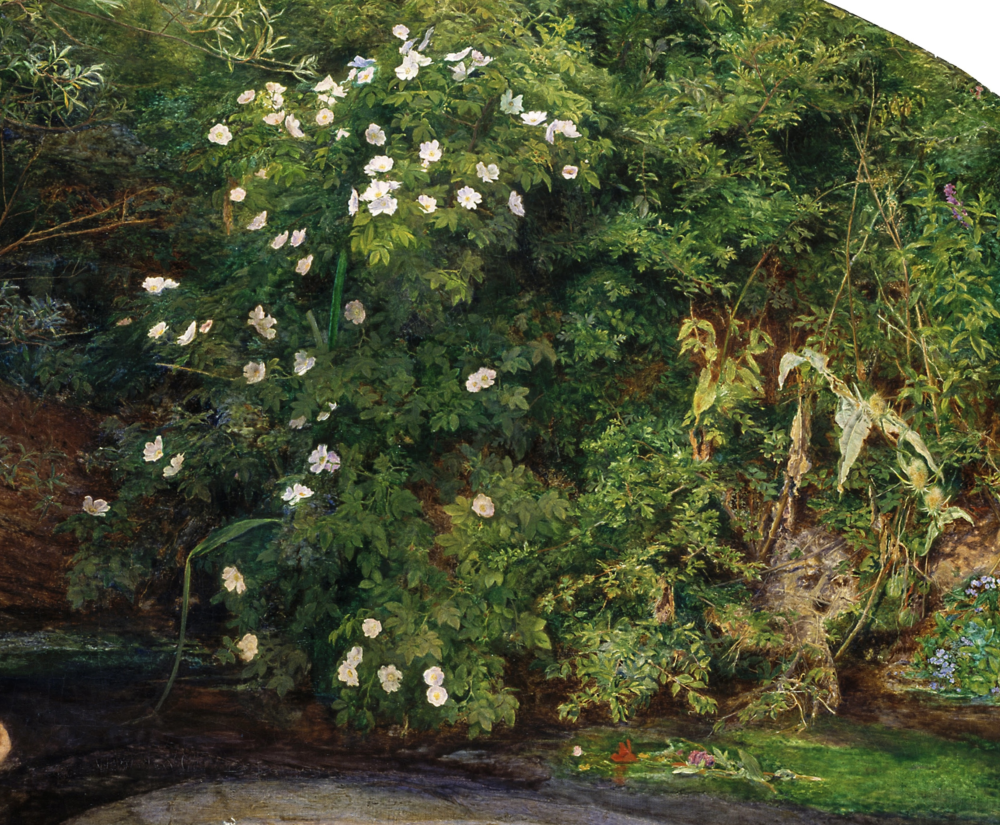

OPHELIA
John Everett Millais (1851-1852) — Tate Britain, Londra
"Ophelia smette di lottare contro la corrente e si fonde per sempre con la natura. Un capolavoro nato dalla sofferenza reale della modella Elizabeth Siddal e dall'ossessione botanica dei Preraffaelliti."
Analisi dei Dettagli

1. Il Volto e la Sofferenza di Elizabeth Siddal
La musa preraffaellita Elizabeth Siddal posò per mesi immersa in una vasca da bagno riscaldata solo da piccole candele sottostanti. Quando le luci si spensero, rimase immobile nell'acqua gelata per non disturbare il pittore, ammalandosi gravemente di polmonite.

2. Il Codice Segreto dei Fiori
Ogni singola pianta dipinta segue un preciso simbolismo vittoriano: i papaveri rossi rappresentano il sonno eterno e la morte, le margherite simboleggiano l'innocenza perduta, mentre i salici piangenti e le ortiche raccontano il dolore dell'amore abbandonato.

3. 5 Mesi lungo il Fiume Hogsmill
Millais dipinse lo sfondo naturale lavorando all'aperto per 11 ore al giorno, sei giorni a settimana, per cinque mesi consecutivi. La precisione botanica fu così straordinaria che i botanici dell'epoca riuscirono a identificare con esattezza ogni singola specie vegetale.